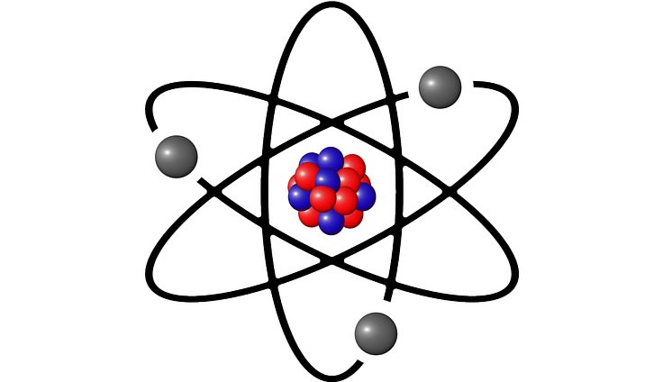

El átomo
¿Que es el átomo?

El atomo es la unidad mas pequeña de un elemento quimico que aun mantiene sus propiedades.
¿De que esta hecho el átomo?
El atomo esta formado de tres particulas fundamentales:
- El electrón: Partícula extremadamente pequeña, con poca masa, que posee carga electrica negativa y que orbita el nucleo átomico
- El proton: Partícula extremadamente pequeña pero con una masa aproximadamente 1836 veces la del électron y que posee carga electrica positiva.
Esta particula junto al neutron forman el nucleo que posee el 99% de la masa del átomo.
- El neutron: Partícula extremadamente pequeña de una masa ligeramente superior al proton y que no posee carga electrica. Este junto al proton forman el nucleo átomico.
Caracteristicas del átomo
Cada elemento tiene átomos distintos gracias a que se diferencian en ciertas caracteristicas, siendo estas el numero átomico y el numero másico.
- El numero átomico: Este numero es el que identifica el elemento y representa el numero de protones que posee.
El número átomico tambien suele representar el número de electrones ya que el átomo tiende a ser neutro electricamente(n.protones=n.electrones)
- El numero masico: Este numero nos muestra la masa total del atomo al sumar la masa de los neutrones y protones.
El numero átomico no puede cambiar debido a que se cambiaria el elemento en cuestion, pero el numero masico si puede cambiar al unirse más neutrones al átomo, así creando los isotopos
Si quieres aprender más sobre el átomo, puede interacturar con los electrones(Bolas grises), neutrones(Bolas azules) y protones(Bolas rojas) de la imagen a la derecha para conocer en profundidad las partículas que lo componen.
Tambien puedes ver el video de debajo para aprender todo lo basico sobre el átomo.